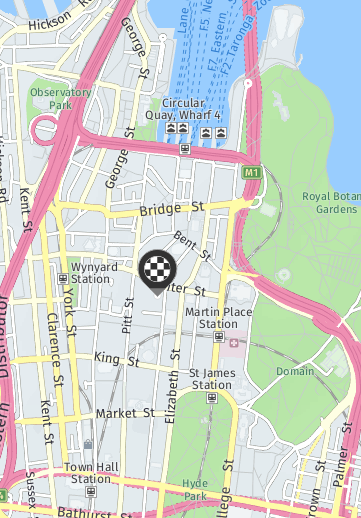

<!DOCTYPE html>
<html>
    <head>
		<meta charset="utf-8">
		<meta http-equiv="X-UA-Compatible" content="IE=edge">
		<title>scenit</title>
		<meta name="description" content="">
		<meta name="viewport" content="user-scalable=no, initial-scale=1, maximum-scale=1, minimum-scale=1, width=device-width">

		<link rel="stylesheet" href="css/normalize.css">
		<link rel="stylesheet" href="css/jquery.mobile.structure-1.4.5.min.css">
		<link rel="stylesheet" href="css/app.css">
		<link rel="stylesheet" href="css/overrides.css">
		<script src="js/vendor/winstore-jscompat.js"></script>
		<script src="js/vendor/jquery-1.11.1.min.js"></script>
		<script src="js/main.js"></script>

        <script>
            var deviceReadyDeferred = $.Deferred();
            var jqmReadyDeferred = $.Deferred();

            $(document).ready(function() {
                on_ready();

                //Use JQM params plugin in order to pass data between pages.
                $(document).bind("pagebeforechange", function(event, data) {
                    $.mobile.pageData = (data && data.options && data.options.pageData) ? data.options.pageData : null;
                });


                $( "#transport_mode" ).on( "pagecreate",     pagecreate_transport_mode );
                $( "#route_selection" ).on( "pagecreate",     pagecreate_route_selection );
                $( "#transport_mode_walking" ).on( "pagecreate",     pagecreate_transport_mode_walking );
                $( "#transport_mode_cycling" ).on( "pagecreate",     pagecreate_transport_mode_cycling );
                $( "#route_walk_fast" ).on( "pagecreate",     pagecreate_route_walk_fast );
                $( "#route_walk_scenic" ).on( "pagecreate",     pagecreate_route_walk_scenic );

           });

			document.addEventListener("deviceready", function() {
				FastClick.attach(document.body); // remove delay in response on apple devices (which wait for the possibility of a doubleclick)
				deviceReadyDeferred.resolve();
			}, false);


            $(document).on("mobileinit", function () {
				$.defaultPageTransition          = "none";
				$.defaultDialogTransition        = 'none';
				$.mobile.defaultPageTransition   = 'none';
				$.mobile.defaultDialogTransition = 'none';
				$.mobile.buttonMarkup.hoverDelay = 0;

                jqmReadyDeferred.resolve();
            });

            $.when(deviceReadyDeferred, jqmReadyDeferred).then(initialise_app);
        </script>

        <script src="js/vendor/jquery.mobile-1.4.5.min.js"></script>
        <script src="js/vendor/jqm.page.params.js"></script>
        <script src="js/vendor/fastclick.js"></script>
	    <script src="js/vendor/jsrender.js"></script>

    </head>
    <body>
		<!-- loading screen -->
		<div id="loading" class="app loading background-splash" data-role="page">
			<main class="app__main" role="main" data-role="content">
				
				
			</main>
		</div>


		<!-- route selection -->
		<div id="route_selection" class="app route_selection background-splash" data-role="page">
			<main class="app__main" role="main" data-role="content">
				<div class="route-selection-wrapper"></div>
			</main>

			<script id="template_route_selection" type="text/x-jsrender">
				<form action="" class="route-selection-form">
					<div data-role="fieldcontain" class="login-form__item ui-field-contain">
						<label class="visuallyhidden" for="route_start">{{>labels.route_start}}</label>
						<input autocapitalize="off" autocorrect="off" class="login-form__text route_start" name="route_start" data-role="none" placeholder="{{>labels.route_start}}" type="text">
					</div>

					<div data-role="fieldcontain" class="login-form__item ui-field-contain">
						<label class="visuallyhidden" for="route_dest">{{>labels.route_dest}}</label>
						<input autocapitalize="off" autocorrect="off" class="login-form__text route_dest" name="route_dest" data-role="none" placeholder="{{>labels.route_dest}}" type="text">
					</div>

					<input type="submit" style="position: absolute; left: -9999px"/>
				</form>
				<div class="map-wrapper">
					
				</div>
			</script>
		</div>


		<!-- Mode selection screen -->
		<div id="transport_mode" class="app transport_mode background-splash" data-role="page">
			<main class="app__main" role="main" data-role="content">
				<div class="transport-mode-wrapper"></div>
			</main>

			<script id="template_transport_mode" type="text/x-jsrender">
				<form action="" class="transport-mode-form">
					<div data-role="fieldcontain" class="login-form__item ui-field-contain">
						<button id="mode_walk" class="login-form__button ui-btn ui-shadow ui-corner-all" type="submit" title="{{>labels.mode_walk}}">{{>labels.mode_walk}}</button>
					</div>
					<div data-role="fieldcontain" class="login-form__item ui-field-contain">
						<button id="mode_cycle" class="login-form__button ui-btn ui-shadow ui-corner-all" type="submit" title="{{>labels.mode_cycle}}">{{>labels.mode_cycle}}</button>
					</div>
					<div data-role="fieldcontain" class="login-form__item ui-field-contain">
						<button id="mode_access" class="login-form__button ui-btn ui-shadow ui-corner-all" type="submit" title="{{>labels.mode_access}}">{{>labels.mode_access}}</button>
					</div>
				</form>
			</script>
		</div>

		<div id="transport_mode_walking" class="app transport_mode_walking background-splash" data-role="page">
			<main class="app__main" role="main" data-role="content">
				<div class="transport-mode-walking-wrapper"></div>
			</main>

			<script id="template_transport_mode_walking" type="text/x-jsrender">
				<h1>{{>labels.walking_options_header}}</h1>
				<a class="walking_options" id="walking_options_fast">{{>labels.walking_options_fast}}</a>
				<a class="walking_options" id="walking_options_mood">{{>labels.walking_options_mood}}</a>
				<a class="walking_options" id="walking_options_access">{{>labels.walking_options_access}}</a>
				<a class="walking_options" id="walking_options_undercover">{{>labels.walking_options_undercover}}</a>
			</script>
		</div>

		<div id="transport_mode_cycling" class="app transport_mode_cycling background-splash" data-role="page">
			<main class="app__main" role="main" data-role="content">
				<div class="transport-mode-cycling-wrapper"></div>
			</main>

			<script id="template_transport_mode_cycling" type="text/x-jsrender">
				<h1>{{>labels.cycling_options_header}}</h1>
				<a class="cycling_options" id="cycling_options_fast">{{>labels.cycling_options_fast}}</a>
				<a class="cycling_options" id="cycling_options_scenic">{{>labels.cycling_options_scenic}}</a>
				<a class="cycling_options" id="cycling_options_path">{{>labels.cycling_options_path}}</a>
			</script>
		</div>

		<div id="route_walk_fast" class="app route_walk_fast background-splash" data-role="page">
			<main class="app__main" role="main" data-role="content">
				<div class="route-walk-fast-wrapper"></div>
			</main>

			<script id="template_route_walk_fast" type="text/x-jsrender">
				<h1>{{>labels.fastest_walking_route}}</h1>
				
			</script>
		</div>

		<div id="route_walk_scenic" class="app route_walk_scenic background-splash" data-role="page">
			<main class="app__main" role="main" data-role="content">
				<div class="route-walk-scenic-wrapper"></div>
			</main>

			<script id="template_route_walk_scenic" type="text/x-jsrender">
				<h1>{{>labels.scenic_walking_route}}</h1>
				
			</script>
		</div>


        <script type="text/javascript" src="cordova.js"></script>
        <script type="text/javascript" src="js/main.js"></script>
    </body>
</html>
